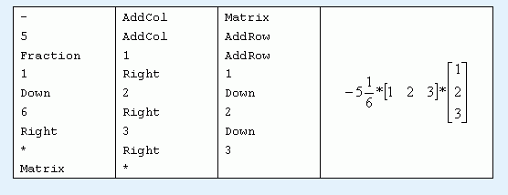
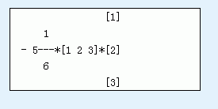

每行有一个代表事件的字符串，直到文件结束。我们约定矩阵的规模不超过
编辑数学公式总是一件烦人的事情，为此HURRICANE小组准备出一个编辑数学公式的软件。除了基本功能外，软件还将实现分式和矩阵输入。按照设想，软件应该是符合人性化设计的，必须最大限度的方便用户输入，尽管代价是软件开发极其复杂。幸好输入的方式和格式都已定好，你只需要编个处理程序就行了，下面是相关的约定和格式：
|
元素 |
元素可以是运算符、括号、数字、字母、矩阵、分式。 |
|||||
|
数字、字母和括号 |
数字包括’0’..’9’、’.’。字母包括’A’..’Z’，’a’..’z’。括号包括’（’，’）’。它们都只占一行，该行也是对齐行。 |
|||||
|
表达式 |
由0个到至多500个元素构成的序列。其中矩阵与分式元素总个数最多不超过30个。 |
|||||
|
编辑框 |
一个输入表达式的矩形区域。每一个编辑框都包括一个对齐行用作编辑框相互之间的对齐。且我们定义编辑框的宽度为最长一行的字符个数，例如表达式空的时候为0，高度为最高行与最低行之间相差的行数（包括），但最小为1，即使表达式为空。 |
|||||
|
对齐行 |
编辑框或元素中某一特定行。该行用于框内对齐表达式及框间对齐，对齐时需要使表达式中的元素的对齐行位于编辑框的对齐行上。 |
|||||
|
运算符 |
有’+’、’-’、’*’、’/’四个，为了区分“-”（减号）与分数线，“-”两边分别加上一个空列。 |
|||||
|
矩阵 |
一个
若矩阵的编辑行数n为奇数，则矩阵的对齐行为中间那行编辑行中编辑框的对齐行，否则为中间两个编辑行之间的空行； |
|||||
|
分式 |
分式由分子和分母两个编辑框以及它们之间的分数线组成。分式分数线为一条由“-”组成的字符序列，同时它也是分式的对齐行。分式的宽度为两个编辑框宽度的最大值加2，即在左右两边分别加上一个“-”；而高度为两个编辑框的高度加上分数线的高度1。两个编辑框按居中对齐，如图：
在居中对齐时，如果不能正好对准，则往左偏半格，如上图左边的分母编辑框。 |
应该指出，编辑框是可以层层嵌套的，比如一个编辑框内有一个矩阵，矩阵内又有若干个编辑框。我们说该编辑框比矩阵的编辑框高一级，矩阵内的所有编辑框同级，分式的两个编辑框也是同级的。注意：同级只是对一个矩阵或一个分式内的编辑框而言。
光标可以跳到编辑框的开始和末尾，也可以向四个方向移动，设光标所处的最低一级的编辑框为A。
Ø 如果光标跳到编辑框的开始（末尾），则把光标置于A的前端（末端）；
Ø 当光标上下移动时
n 如果A上(下)方有与A同级的编辑框B，则把光标置于B的前端，
|
示例 |
下移一次后 |
|
XXXX| ------ XX |
XXXX ------ |XX |
n 否则对比A高一级的编辑框作同样判断，若A是最高级别的编辑框，则不作任何处理。如图，竖线代表光标：
|
示例 |
下移一次后 |
再下移一次后（不变） |
|
d --- |c ----- a --- b |
d --- c ----- --- b |
d --- c ----- --- b |
Ø 当光标左（右）移动时
n 若光标位于A的前端(末端)，
u 如果左(右)边没有同级的编辑框，则光标将返回到更高一级的编辑框（若无则不作处理），置于矩阵或分式的左(右)边；
u 如果左(右
每行有一个代表事件的字符串，直到文件结束。我们约定矩阵的规模不超过
按规定的格式输出编辑框的结果，空白的地方用空格补上，每行行末不能有多余空格。最后一行行末保留一个回车。
输入样例

输出样例
